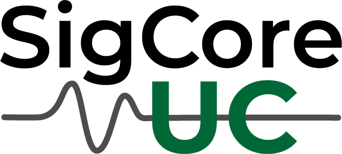

Overview
What It Is
SigCore UC is a compact Industrial Control Platform that combines real-world hardware I/O with open firmware and software in a single, deployable unit.
It is designed to replace ad-hoc combinations of software, discrete hardware components, and experimental development boards with one coherent system.
Why It Exists
Control and automation projects often require assembling development boards, relay modules, signal conditioning hardware, and proprietary software stacks before meaningful work can begin. This increases complexity, reduces reliability, and makes systems difficult to maintain or reproduce.
SigCore UC was created to remove this integration burden by providing conditioned I/O, deterministic control, and a usable software stack out of the box, without locking users into a closed ecosystem.
What It Does
- Digital and analog I/O suitable for real-world voltages and currents
- Built-in PID control loops
- On-device data logging
- Ethernet and USB connectivity
- Open APIs for external software integration
SigCore UC is intended for laboratory automation, industrial control, test systems, education, and experimentation.
System Architecture
Configuration, monitoring, PID tuning, and data logging are handled entirely in firmware on the device, with the remote Control Panel serving solely as the user interface.
The system continues operating independently if the UI disconnects. Control logic does not depend on a host PC.
Current Status
- Hardware: production-ready revision
- Firmware and Control Panel: near-release, running continuously in real environments
- Evaluation units: available
- Manufacturing and fulfillment: preparing for Crowd Supply launch
Related Resources
Contact
For evaluation units, technical questions, or media inquiries, please use the contact information provided on the website.